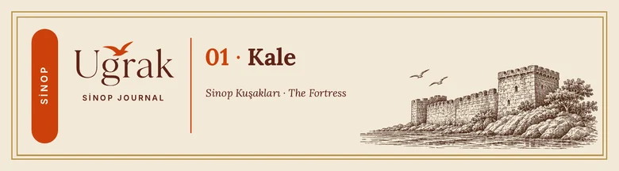
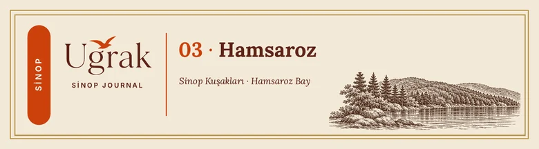

Şehrin başka hikâyeleri de var.
The city has other stories too.

Sinop'u gezerken cebinde dursun. Yerleri bul, notunu al, hikâyeleri dinle. Defterin varsa ona eşlik eder; yoksa tek başına da işini görür.
İşaretlediğin durak: 0
11 durak
Places on the map. Numbers match the district map in the journal (p. 12).
Yol tarifi Google Haritalar'da açılır. Bu sayfa konumunu istemez, takip etmez.
Bana kalan
Kulağına Sinop
Short audio stories, about two minutes each.
Mührün nerede?
Where to get stamps for page 56 of the journal.

Defterin 56. sayfası, uğradığın yerlerin mühürlerini toplaman için. Mühür veren yerler anlaştıkça buraya eklenir; adres ve açık günler burada güncel tutulur.
Kodunu yaz
Kod, defterin son sayfasındaki örtülü alanın altında. Bir kez yazman yeter; bu telefon hatırlar.
Your code is under the scratch panel on the last page.
Ne saklanıyor?
Hesap, isim, e-posta ya da konum istenmez. Kod, işaretlerin ve notların yalnızca bu telefonda tutulur; bize gelmez. Reklam ya da takip yok.
Sırrı buldun mu?
Defterde dört tüy saklı. Tüylerin söylediği kelimeyi bulduysan, ne yapacağını da biliyorsun.